Let the font be itself.
Seven new fonts, two reference approaches and a stronger prompt that asks the model to carry over each font’s distinctive features. Each pair uses GPT Image 1.5 low with the same prompt and target.
One attempt per font and approach. These are raw generated images, resized to 512px, before tracing or placement; apparent size reflects image framing. Some target characters are actually absent, so there is no original glyph to compare. Click an image to enlarge it or open the exact inputs below.
| Font lettering & inputs | Full alphabet sheet | Three glyphs · H O S | Original character |
|---|---|---|---|
| Allura · $ HELLO ABC Inputs: alphabet sheet · H · O · S | 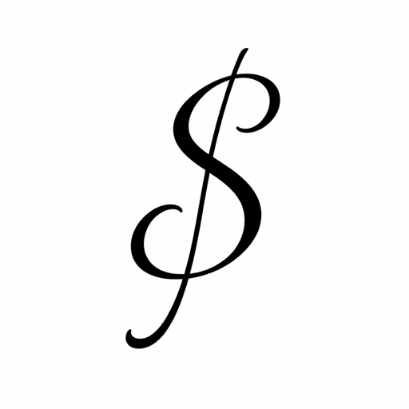 | 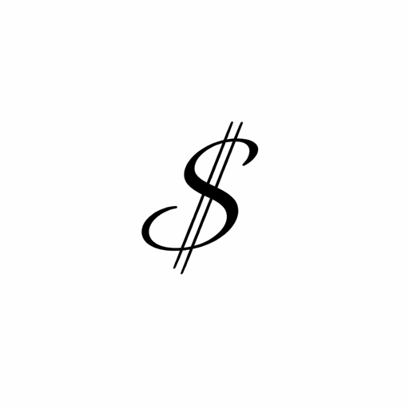 | $ Original glyph |
| CameoAntique · & HELLO ABC Inputs: alphabet sheet · H · O · S | 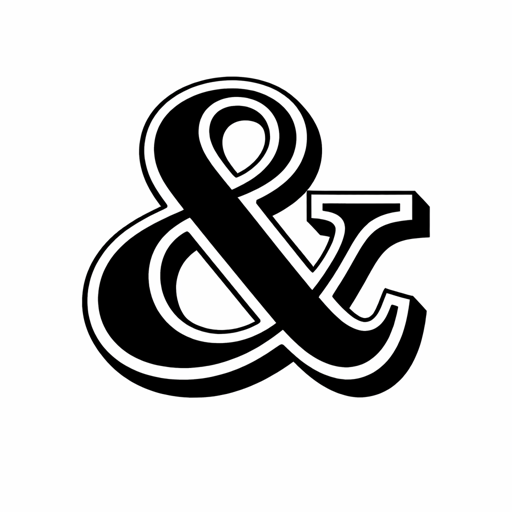 | 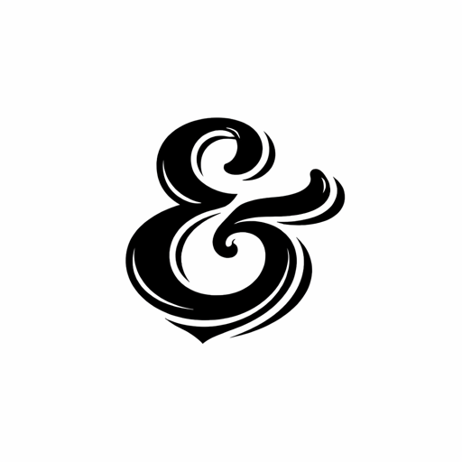 | Not present in source font. |
| PAZEA · & HELLO ABC Inputs: alphabet sheet · H · O · S | 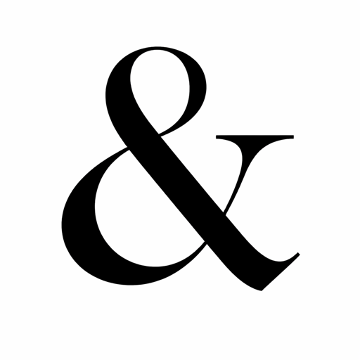 | 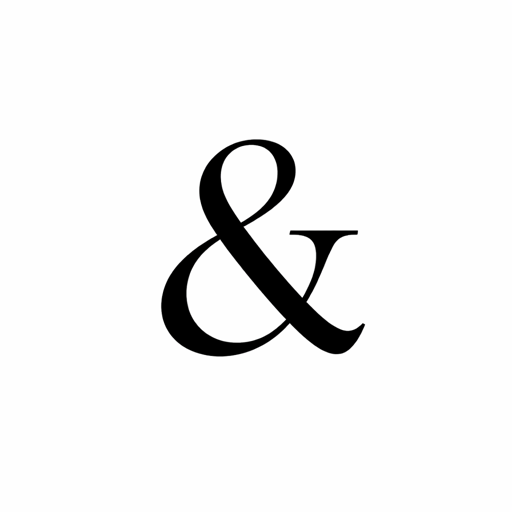 | Not present in source font. |
| Alex Brush · & HELLO ABC Inputs: alphabet sheet · H · O · S | 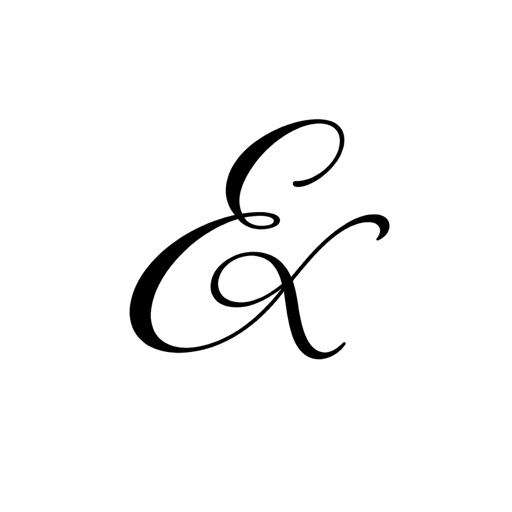 | 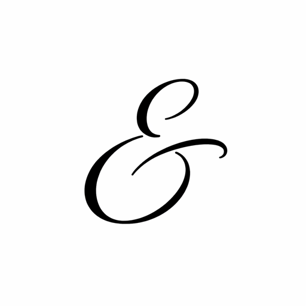 | & Original glyph |
| Abril Fatface · % HELLO ABC Inputs: alphabet sheet · H · O · S | 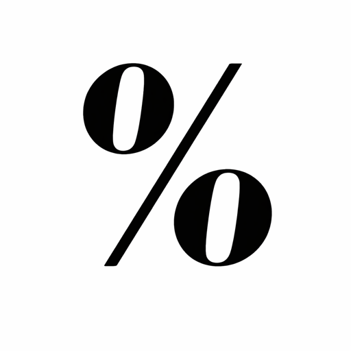 | 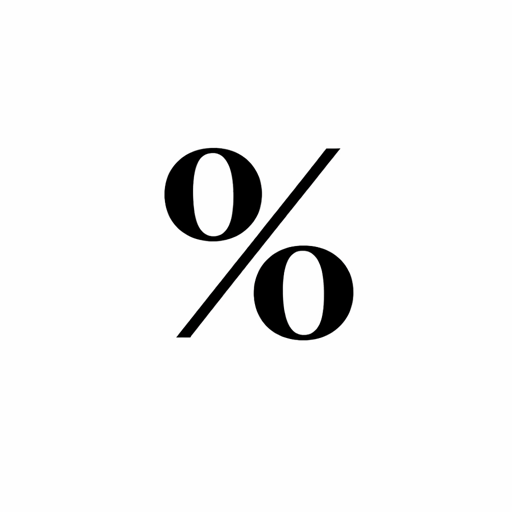 | % Original glyph |
| Abhaya Libre · @ HELLO ABC Inputs: alphabet sheet · H · O · S | 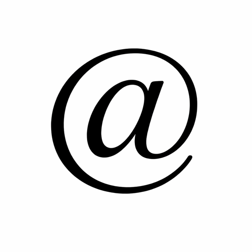 | 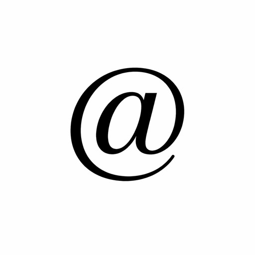 | @ Original glyph |
| CF Spaceship · @ HELLO ABC Inputs: alphabet sheet · H · O · S | 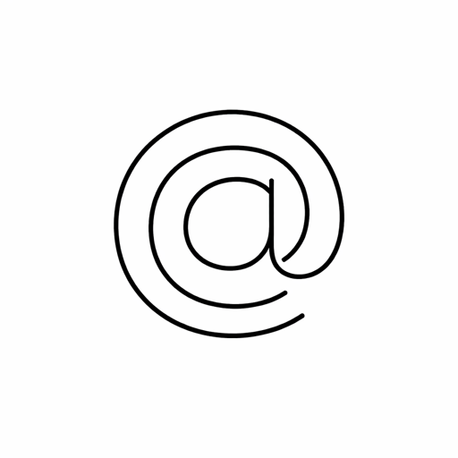 | 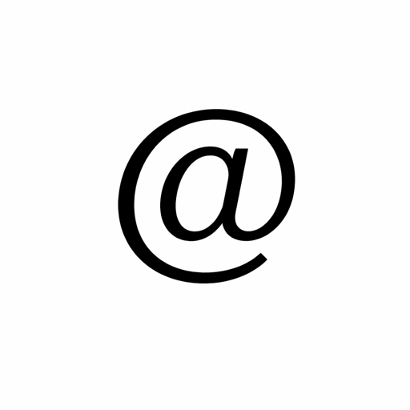 | Not present in source font. |


Prompt and test details
“Create exactly one [character] character as a new member of the typeface shown in the reference image or images. Study and carry over the distinctive visual DNA: proportions, stroke weight and contrast, angle, curves, terminals, serifs or lack of serifs, flourishes, decorative cuts, outlines and other repeated signature details when present. Be faithful to this specific font, even if unusual; do not replace its character with a generic symbol. Keep the symbol immediately recognizable as the requested character. Show only one black glyph, large and centered on a plain white background, with clear edges for tracing; no labels, other characters, shadows, background texture or decoration unrelated to the font.”
Each sheet omits glyphs absent from its source font. The three-glyph approach sends separate images of H, O and S. The inputs differ in content and image count, so the comparison doesn’t isolate which factor causes a difference. The app’s production prompt has not changed.